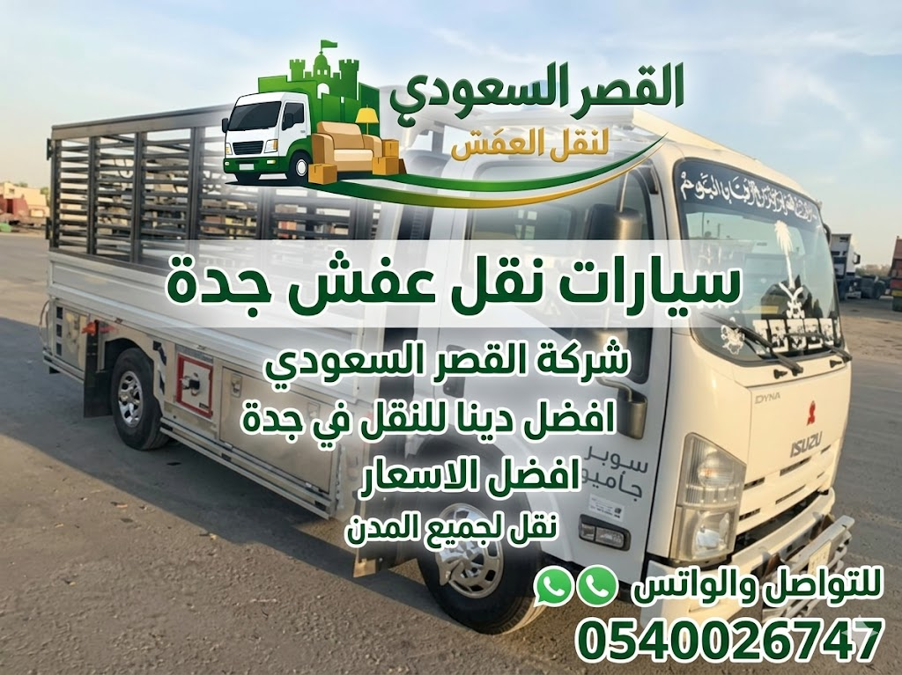

دينا نقل عفش جدة: شاحنات متطورة لحماية أثاثك
تمثل شاحنات دينا نقل عفش جدة العمود الفقري لأي عملية نقل أثاث ناجحة داخل العاصمة التجارية للمملكة. فمع اتساع رقعة مدينة جدة من أبحر الشمالية والحمدانية شمالاً إلى النزلة والجامعة جنوباً، تتطلب عملية نقل الأثاث سيارات نقل متخصصة ومصممة هندسياً لحماية المنقولات من عوامل المناخ الساحلي الرطب، ورياح الغبار، ومطبات الطرق السريعة مثل طريق الحرمين وطريق الملك عبد العزيز.
في شركة القصر السعودي، لا نعتمد على شاحنات النقل العادية أو السيارات المفتوحة التي تترك الأثاث عرضة للحرارة والأتربة، بل نمتلك أسطولاً متكاملاً من شاحنات الدينا المقفلة (Box Trucks) والدينا الجامبو المجهزة بأحدث تقنيات التثبيت الهيدروليكي والبطانات الواقية لضمان انتقال آمن وسلس لغرف النوم، والمطابخ، والأجهزة الكهربائية، والمكاتب.
هل ترغب بحجز دينا نقل عفش سريعة في جدة؟
سياراتنا جاهزة للانطلاق الفوري مع سائقين محترفين وتصاريح دخول لكافة أحياء جدة.

المواصفات الفنية لأسطول سيارات دينا نقل العفش بجدة
تم تجهيز شاحنات الدينا في القصر السعودي بمواصفات قياسية خاصة لتحمل الأوزان العالية وحماية الأسطح الخشبية والزجاجية الحساسة أثناء الحركة:
دينا قياسية مغلقة (4.5 م)
- الأبعاد: طول 4.5 م × عرض 2.2 م × ارتفاع 2.2 م.
- السعة الحجمية: تتسع لـ 22 متر مكعب (حوالي 3-4 طن).
- الاستخدام الأمثل: شقق 2-3 غرف، غرف نوم فردية، أجهزة كهربائية ومجالس.
- الميزة: سهولة المناورة في الشوارع والأزقة الضيقة داخل أحياء جدة.
دينا جامبو عملاقة (6 م)
- الأبعاد: طول 6.0 م × عرض 2.3 م × ارتفاع 2.4 م.
- السعة الحجمية: تتسع لـ 32 متر مكعب (حتى 6 طن).
- الاستخدام الأمثل: شقق كاملة 4-5 غرف، أدوار فلل سكنية، نقل مكاتب وشركات.
- الميزة: شحن محتويات المنزل كاملاً في رحلة واحدة لتوفير الوقت والمال.
دينا بمصعد هيدروليكي
- التجهيز: منصة هيدروليكية خلفية (Tail-Lift) بحمولة 1000 كجم.
- الاستخدام: آلات البيانو، الخزائن الفولاذية، ثلاجات العرض، السيرفرات.
- الأمان: رفع وتنزيل ناعم ومستوٍ دون الحاجة لحمل يدوي مجهد قد يسبب السقوط.
- الميزة: منع الاحتكاك بالأرضيات تماماً أثناء التحميل والتنزيل.
تجهيزات حماية الصندوق الداخلي للدينا
الفرق بين دينا نقل العفش ودباب/وانيت النقل في جدة
يحتار العديد من العملاء بين استئجار دينا نقل أثاث مغلقة أو الاستعانة بدباب وانيت مفتوح. يوضح الجدول التالي الفوارق الجوهرية لحماية استثمارك وسلامة منقولاتك:
| وجه المقارنة | دينا نقل العفش المغلقة (القصر السعودي) | دباب / وانيت نقل مفتوح (سائق شارع) |
|---|---|---|
| سعة التحميل | 22 إلى 32 متر مكعب (تستوعب شقة كاملة 3-5 غرف) | 3 إلى 5 أمتار مكعبة فقط (قطعة إلى قطعتين فرديتين) |
| الحماية من الطقس | حماية 100% (صندوق مغلق عازل للغبار، الشمس، والرطوبة) | معدومة (الأثاث مكشوف تماماً للشمس والأتربة وعوادم السيارات) |
| تثبيت الأثاث والأمان | أحزمة راتشيت كربونية، بطانات لباد، وسكك جانبية | حبال قنب عادية تسبب خدش وتكسير حواف الأخشاب والرخام |
| عدد المشاوير والتكلفة الإجمالية | مشوار واحد ينهي النقل بالكامل (أوفر زمناً ومالاً) | يحتاج إلى 4 إلى 6 مشاوير مما يضاعف التكلفة والجهد |
| خدمات العمالة والفك والتركيب | فريق نجارين وفنيي تكييف محترفين مع أدواتهم | سائق بمفرده ولا تتوفر أدوات فك أو تركيب متخصصة |
بروتوكول التحميل الهندسي وتوزيع الأوزان داخل الدينا
تحميل الدينا ليس مجرد رص للأغراض، بل يخضع لأسس هندسية تضمن ثبات مركز ثقل الشاحنة (Center of Gravity) على الطرق السريعة والدوارات بجدة، وتمنع انضغاط القطع الهشة:
المنطقة الأمامية (ملاصقة لكابينة السائق)
تخصيص هذه المنطقة للقطع الأثقل وزناً لضمان ثبات الشاحنة: الأجهزة المنزلية الثقيلة (الثلاجات، الغسالات)، خزائن الملابس بعد فكها، وألواح الرخام المثبتة رأسياً.
المنطقة الوسطى (بطانة الجوانب والممرات)
رص أطقم الكنب والمجالس المحمية برولات الفقاعات والببلز والنايلون الاسترتش، وتثبيتها بأحزمة الراتشيت على سكك الجدران لمنع أي تأرجح أثناء الانعطافات.
المنطقة العلوية (الرفوف والكوابيل)
وضع كراتين الملابس والمفروشات الخفيفة، ومراتب السرير المغلفة، والمخاد، والوسائد كعوازل واقية تمتص الاهتزازات فوق القطع الصلبة.
المنطقة الخلفية ومحيط الباب
تخصيصها للقطع الحساسة التي تتطلب عناية فائقة عند التنزيل الأول: كراتين أطقم الصيني والكريستال المعلمة بملصقات "قابل للكسر"، شاشات التلفزيون الذكية بصناديقها المبطنة، والحقائب الشخصية المستعجلة.
سرعة الاستجابة وتغطية كافة أحياء جدة
يتوزع أسطول سيارات دينا القصر السعودي في نقاط تمركز استراتيجية بالقرب من المحاور الرئيسية بجدة (طريق الملك، طريق المدينة، طريق الحرمين، شارع حراء، طريق الأمير ماجد)، مما يضمن وصول الدينا إلى باب موقعك خلال 30 إلى 45 دقيقة كحد أقصى:
أحياء شمال جدة
أبحر الشمالية والجنوبية، الشاطئ، البساتين، المحمدية، النعيم، المرجان، الصفا، المروة، الحمدانية، الصالحية.
أحياء وسط جدة
الروضة، الحمراء، الأندلس، مشرفة، العزيزية، الرحاب، الفيصلية، بني مالك، النسيم، الورود، الفيحاء.
أحياء جنوب وشرق جدة
الجامعة، الروابي، السامر، الأجاويد، السنابل، الفضل، الأمير فواز، مدائن الفهد، والمنطقة الصناعية.
لماذا تختار دينا القصر السعودي بدلاً من عمالة الشارع؟
| المعايير والضمانات | دينا القصر السعودي الرسمية | سيارات وسائقي الشارع العشوائيين |
|---|---|---|
| حالة الشاحنة ونظافتها | شاحنات حديثة معقمة ومخصصة فقط للعفش المنزلي النظيف | شاحنات متهالكة تنقل مخلفات بناء وبضائع تجارية تلوث المفروشات |
| عقد إلكتروني وفاتورة رسمية | عقد موثق يضمن سلامة المنقولات بالكامل مع فاتورة ضريبية | اتفاق شفهي غير ملزم وتغيير مفاجئ في الأسعار عند الوصول |
| سائقون مرخصون ومحترفون | سائقون مدربون على دروب جدة السريعة وأنظمة المرور والسلامة | سائقون يفتقرون للخبرة مما يعرض الحمولة للتلف أو المخالفات |
| تجهيزات الفك والتغليف | طواقم نجارين محترفين ومواد تغليف أصلية (فقاعات، كرتون 5 طبقات) | لا تتوفر أدوات فك أو مواد حماية مما يتسبب بكسر الدواليب |
جدول أسعار دينا نقل عفش بجدة 2026
نعتمد سياسة تسعير واضحة وشفافة بدون أي رسوم خفية، مع توفير خيارات مرنة تناسب نقل قطع منفردة أو منازل وفلل كاملة:
| نوع الخدمة والباقة | المواصفات والتفاصيل | متوسط السعر التقريبي | خيارات الحجز |
|---|---|---|---|
| مشوار دينا فقط مع السائق | دينا مغلقة 4.5 م مع سائق محترف بدون عمالة (العميل يتولى التحميل والتنزيل) | 200 - 250 ريال | احجز الآن |
| دينا مع عمال تحميل وتنزيل | دينا مغلقة + 2 إلى 3 عمال مدربين لتحميل وتثبيت وتنزيل أثاث شقة صغيرة (1-2 غرفة) | 350 - 500 ريال | احجز الآن |
| باقة الدينا المتكاملة (شقة 3-4 غرف) | دينا جامبو 6 م + طاقم كامل مع نجار وفني تكييف (فك، تغليف بابلز، تحميل، تركيب) | 750 - 1100 ريال | احجز الآن |
| دينا بمصعد هيدروليكي (أحمال ثقيلة) | دينا مجهزة برافعة هيدروليكية خلفية لنقل خزائن حديدية، أجهزة دقيقة، بيانو | 450 - 650 ريال | احجز الآن |
| نقل فيلا كاملة (شاحنتان دينا جامبو) | شاحنتان جامبو 6 م + 6 عمال + 2 نجارين + تغليف شامل VIP لجميع محتويات الفيلا | 1800 - 2500 ريال | احجز الآن |
كيف تحجز دينا نقل عفش جدة في 3 خطوات بسيطة؟
تواصل وأرسل التفاصيل
اتصل على 0540026747 أو راسلنا عبر الواتساب مع ذكر موقع التحميل والتسليم وحجم المنقولات.
تأكيد الموعد واختيار الباقة
نحدد معك نوع الدينا الأنسب (عادية أو جامبو) وما إذا كنت ترغب بسائق فقط أو فريق عمال متكامل.
وصول الدينا وتنفيذ النقل
تصل الدينا المجهزة في التوقيت المتفق عليه بدقة ويبدأ التحميل والتثبيت ونقل العفش بأمان كامل.
خدمات مرتبطة بنقل الأثاث قد تحتاج إليها
الأسئلة الشائعة عن دينا نقل عفش جدة
شاحناتنا من طرازات إيسوزو ودينا جامبو حديثة، مزودة بصناديق مقفلة معزولة حرارياً بطول 4.5 إلى 6 أمتار، ومبطنة من الداخل بألواح لباد ومطاط لمنع الاحتكاك، مع قنوات وأحزمة راتشيت لتثبيت كل قطعة بإحكام، وتتوفر رافعات هيدروليكية خلفية للأوزان الثقيلة.
يبدأ سعر مشوار الدينا مع السائق فقط من 200 إلى 250 ريال، بينما تبدأ باقات الدينا الشاملة للعمال المتخصصين والتحميل والتنزيل من 350 إلى 550 ريال للشقق الصغيرة، وتصل إلى 800 - 1200 ريال للباقات الشاملة مع الفك والتغليف والتركيب الكامل.
نعم بكل تأكيد، نوفر خيار تأجير الدينا مع سائق محترف مرخص فقط لمن يرغب بنقل أغراضه بنفسه أو لديه عمالة خاصة به، مع التزام تام بالمواعيد ونظافة الصندوق.
تتسع الدينا الجامبو ذات الصندوق 6 أمتار (سعة تقارب 30 متر مكعب) لشقة مكونة من 3 إلى 4 غرف بالكامل. أما للفلل الكبيرة والمنازل الواسعة، نوفر أسطولاً من شاحنتين أو أكثر يعملان بالتوازي لإنجاز عملية النقل في يوم واحد دون أي تأخير.
الدينا المغلقة تحمي أثاثك تماماً من غبار جدة ورطوبتها وحرارة الشمس المباشرة وتمنع السقوط، وتتسع لأثاث منزل كامل. بينما الدباب أو الوانيت يكون مفتوحاً وصغيراً جداً ولا يصلح إلا لنقل قطعة فردية كغسالة أو ثلاجة، ويعرض المفروشات لعوامل الجو ومخاطر الطريق.
يمكنك الحجز الفوري بالاتصال المباشر على 0540026747 أو عبر الواتساب. نحدد معك حي التحميل والتنزيل ونوع الأثاث، ونرسل لك الدينا المجهزة خلال 30 إلى 45 دقيقة في أي حي من أحياء جدة.
احجز دينا نقل عفش مجهزة بجدة الآن
شاحناتنا جاهزة لخدمتكم 24 ساعة في جميع أحياء جدة. اتصل الآن لتحصل على أفضل تسعيرة وخصم فوري يصل إلى 25% على المشاوير والباقات الشاملة.